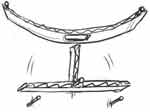

Davy and the Lightning Bolt
Daniel looked at his clean room and sighed. Mom said that her cousin Jane was coming by to visit. “She has a son named Davy,” Mom had told him. “He’s seven, and I’m sure he’d like to play with your train set or build something with Legos.”
It would have been much easier to play outside. But it was windy and wet outside. “Maybe I’ll set up the train,” Daniel said to himself. “At least there are not so many pieces to lose.” But as he reached under his bed for the box, Daniel spotted his toy car collection.

Daniel had a box full of toy cars. Some of them were really old and nearly junk. But last month Grandpa had given him a new set of three racers. One was fire red, one was lemon yellow, and one was blue with black stripes. Rosie didn’t like playing cars, and Chad was usually too busy. Daniel pulled out his racing board and leaned it against the bed. Racing cars with Davy would be fun.
“Daniel, they’re here!” Rosie called down the hall. Daniel left the cars in a neat row and joined his sisters at the living room window. Sure enough, a tall lady and a boy in a bright yellow jacket were coming up the front steps. Except the boy wasn’t really coming up the steps. He was sliding down the railing.
Mom greeted them at the door and soon a loud voice was saying, “Hello! I’m Davy! Who are you? Do you have toys? My mom said you would play with me. Do you have Nintendo?”
“Not so many questions, dear,” Cousin Jane said with a laugh. “I’m sure you will get along fine and have a good time.”
Daniel led the way to the bedroom while Davy chattered about everything he saw. “Are those your Thunderjet racers?” He asked when he spotted the cars. “They’re cool! I have five racers, but I’m missing the Lightening Bolt. Yours is new isn’t it?” As Davy talked, he picked up the yellow car and looked at it closely.
“Yes, my grandpa gave them to me,” Daniel said, smiling. “Maybe you would like to race them on my racing board?”
“That would be super!” Davy was eager for action. After a few tries with the “old timers” the boys left them for wrecks and set the new racers to flying. Along the bookshelf, over the dresser, and down the wooden track with a zoom!

When they hit the racing board, Davy would scream, “Lightning wins every time!” He never seemed to get tired of the yellow car or want to play with any other. But he always made sure that Daniel knew that he had won.
“Ha, ha, ha!” he laughed when Daniel’s Firebird tumbled off the edge of the runway. “He’s busted now! I won and I bet a million that I’ll win next time.”
Daniel didn’t say anything, but when his cars went sailing straight down the track he couldn’t help grinning. Davy gave Lightning Bolt a quick shove and knocked the other two out of the way. “When speedy man comes, better watch out!” he cried.
“But you can’t push them on the runway,” Daniel said. “That’s not fair.”
“Who says? I can do what I want!” And with that Davy started a one-car race all around the room. Daniel just sat on the floor and watched. It wasn’t much fun to play anymore. Not when Davy always had to win.
“You can play with the cars if you want to,” he said. “I’m going to read a book.”
“Books are dumb. You just don’t like losing,” Davy said. “I don’t care if you go away. Lightning still rules! Zoom! Zoom! Zoom!”
Daniel walked off down the hall. His head hurt from all the noise and he was glad to find a quiet spot in the corner of the living room. But it was only a few minutes later when Davy appeared.
“Hey, when are we going to eat? I’m starved!”
Daniel looked at the clock. It was almost supper time. “It will be time to eat when we clean up, I guess. Are you done playing with the cars?”
“Yeah, your little brother has them.” Sure enough, Kyle had a car in each hand when Daniel came into the bedroom. He grinned and pushed an old truck along the racing board. Daniel looked around for his racers.
“He can play with those old ones, but where is the yellow racer?” Daniel asked.
“Dunno,” Davy said quickly. “He could be sitting on it, or maybe I left it under the bed.” Daniel hunted, but the yellow racer wasn’t anywhere.
“It isn’t in your pocket?” Daniel asked. He was beginning to feel suspicious. But Davy had slipped off down the hall. Daniel found him in the kitchen standing next to his mom.
“Davy, did you take my yellow car?” Daniel asked, looking at the boy closely.
“Oh, I’m sure he didn’t,” Cousin Jane said quickly. “You don’t know about his yellow car, do you, Deary?”
“What yellow car?” Davy asked, opening his eyes wide.
“I guess he doesn’t know about it,” Davy’s mother said, smiling sweetly. Daniel felt angry. He wanted to say something, but he knew he shouldn’t contradict. Davy did have his yellow car, and now he was lying to cover it up. A cold bitter feeling crept into Daniel’s heart.
“Davy stole my car!” he whispered to Rosie, when they sat down at the table.
“Which car?”
“The new yellow racer Grandpa gave me. He was playing with it, and now I can’t find it. Davy says that he doesn’t know where it is, but he’s lying! I know it’s in his pocket.”
“Daniel, is there something important you need to say?” Dad asked, looking sharply across the table. Daniel felt his face turn red and he shook his head.
As they were clearing the table, Dad took out his Bible. “We usually read a Bible story each night and you are welcome to join us,” he said to Cousin Jane. Everyone sat quietly as Dad told the story of the man robbed on the way to Jericho. He described the well-dressed priest and the careful Levite who passed by on the other side of the road. As Daniel listened, a quiet voice whispered, Are you going to pass by, too?
Pass by what? No one is hurt near here, Daniel told himself. But then he thought of why Jesus was telling the story. Jesus wants me to love Davy—but I can’t! Not when he’s stolen and lied to me like that!
As soon as he could, Daniel slipped away to his room and shut the door. Toy cars lay all around the floor and he hit his toe on one as he knelt down by the bed. Even his cars seemed mean and untrustworthy. I can’t forgive him—I can’t—I can’t. Daniel’s heart hurt and the tears came to his eyes.
Daniel lifted his head and found himself staring at a picture on the wall. It was Jesus with a lamb. And that lamb was him. I was naughty and bad, and Jesus loved me. He forgave me. Daniel felt the tears came to his eyes again, but they were different tears.
When Davy left with his mom that night, Daniel whispered something in the boy’s ear. Davy looked surprised, and then looked at his feet. “Thanks,” he said gruffly and then disappeared out the door. Daniel smiled. In his bright yellow coat, he looked liked a streak of lightning.
A Look at Forgiveness
Is it hard for you to forgive people? When your little brother is bad, you might get upset with him. Then he says he’s sorry, and you say “I forgive you” and everything is all right again. But sometimes it is much harder to forgive. Especially when the other person doesn’t seem sorry at all.
In the story, Daniel felt he had a reason to be angry. What do you think? Is it right to steal and lie? If another child took your favorite racing car, would you care? What if he took an old broken toy? It still wouldn’t be right, but it wouldn’t matter so much to you. It is when we really care about something that it becomes hard to forgive.
How can we forgive people that are mean and hurtful? When the street bully pushes your little sister down, you want to punch him back and teach him a lesson. If you forgive him, he might do it again! But Jesus said we must forgive others if we want God to forgive us (Matthew 6:14-15). We are suppose to “overcome evil with good.” (Romans 12:21) How can we do that?
To really be able to forgive, we must trust that God can take care of us. Don’t you think He is big enough? He says, “Vengeance is mine; I will repay.” (Romans 12:19) It is quite terrible to think how everyone who does evil will be punished one day! If they are not sorry now, they will be then. Besides, God loves each of us and often treats us better than we deserve. What if God wasn’t a kind and forgiving Father? What if He said, “You are so bad that I will never forgive you”—and you were on God’s “hate list”? But God doesn’t have a “hate list.” He wants to forgive us and teach us how to be forgiving, too. Isn’t forgiveness a wonderful thing?
A Sweet Smell
Step out on the porch a minute. I want you to smell something wonderful. “What is it?” you ask, twitching your nose in the damp air. Dead leaves still lie under the trees where a few snowdrops are pushing through. But we aren’t smelling the snowdrops. Clumps of green show where the daffodils are coming up. But the fragrance doesn’t come from them. What can smell so sweet on a cold winter day?
Just step near the daphne bush a moment. “Ah! What a lovely smell!” you say, bending closer. “It is a good thing it is planted by the front door so we can enjoy it.” I thought you would say that. Don’t you love sweet-smelling flowers? It doesn’t matter if they aren’t showy or colorful, because the fragrance is what counts. All you have to do is close your eyes and sniff!
Did you know that the prayers of God’s children are a sweet smell to Him? I’m not talking about the prayers your lips say, but the kind that come from your heart. God knows the difference between a fragrant prayer and one that is just for show. If you are having a hard time obeying cheerfully, Mom might say, “You better pray.” Do you bow your head and say a few words? Or do you go to your room and really ask for help because you want to please Jesus? Which one do you think God will notice?
True prayer is talking with a dear, kind Friend who loves us. Can you imagine God sitting on His high throne, waiting for you to slip up close and tell Him all your troubles? When you kneel down and open up your heart to Him, you are God’s little flower. Just see Him bending near in delight, saying, “That call for help is the sweetest fragrance I have smelled today!” Yes, the Father in heaven is pleased to hear the call of His children who truly trust in Him. Are you a child that brings Him delight?
Philippians 4:6 says, “In every thing, by prayer and _______________ with thanksgiving let your requests be know unto God.” Find the missing word by filling in the missing letters below. Can you figure out what it might mean?
__omething you ask for
__pon your knees,
__raying and
__leading, knowing God will
__isten to the needy
__n great love and
__ompassion
__nd that He is able
__o do what
__ cannot. To depend
__n God, because
__othing is impossible with Him.
“Grandpa, Alice says I’m in trouble because I got some flowers for Mama,” Sammy said. He looked sadly at the bright daffodils he held.
Grandpa closed his Bible and looked up at his grandchildren.
“But Mom said he wasn’t suppose to go outside until his work was finished,” Alice said. “He still has to set the table.”
Grandpa smiled at them and said, “You remind me of a story. I’ll call it—
To Do Good or to Do Evil?
(From Luke 6:6-11)
There was once a Jewish man who lived in a town in Galilee, whom I will call James. We don’t know all the history of his life, but one thing is certain—it wasn’t easy. James had a withered hand. Maybe it had been injured while he worked, or maybe he was born that way. Whatever the case, he couldn’t use it and had to go about his work using only one hand. He couldn’t hold a nail he wanted to pound. He couldn’t toss his little boy in the air. James was crippled, and he couldn’t do anything about it.
Now every Sabbath James would go to the synagogue to worship God. On the Sabbath day he wasn’t suppose to do any work. Instead he would listen to the scribes and Pharisees teaching about how to keep the law and please God. One Sabbath a visitor stood up to speak. James had heard of this man, I am sure. His name was Jesus and He had power to heal.
“Watch out! His power is from the devil,” a scribe muttered. “I have heard that He breaks the law. How can someone please God who works on the Sabbath day?” James wasn’t so sure, but he wanted to be healed. He needed two good hands like any other man.
Suddenly the newcomer looked straight at James. He had the kindest eyes James had ever seen. “Rise up and stand out here in the middle,” Jesus said. James could feel everyone staring at him, but he stood up. Jesus looked over to where the scribes and Pharisees stood frowning. “I will ask you one thing,” he said. “Does it break the law to do good on the Sabbath day, or to do evil?” James could see their faces, hard and cold. He knew that they didn’t believe in Jesus’ power. But this man cared.
“Stretch out your hand!” Jesus said, His eyes flashing. James obeyed. In awe and delight he stared at his hand. Were those strong brown fingers his own? Yes, indeed! He felt power surge through his hand and he looked up with a grin. But there were only two eyes that shared his joy. The angry faces and evil looks of the Pharisees and scribes made him shiver. They were not pleased that his hand was well. Jesus had healed on the Sabbath day, and to them that was a crime. Who was right?
“Why did they think Jesus shouldn’t heal people on the Sabbath?” Alice asked, with a puzzled face.
“Why did you think that Sammy shouldn’t pick flowers for Mother?” Grandpa replied.
“Because he wasn’t suppose to,” said Alice. Grandpa didn’t say anything. Finally she said slowly, “Isn’t he suppose to obey what Mom said?”
“Is is right to do good or to do evil?” Grandpa asked with a smile.
“To do good!” Sammy said quickly. “Wasn’t picking the flowers doing good, Grandpa? I was going to set the table and I just thought that Mama likes flowers, so I got them for her.”
Grandpa looked at Alice, who was hanging her head. “What do you think, my little law-keeper?” he asked, giving her braid a gentle tug. “Was Sammy pleasing Mother by what he did, or was he not?”
“I didn’t think of it quite like that before,” Alice said. “I’m sorry, Sammy. I guess you were doing good, even though it didn’t seem like it.”
“It’s okay,” Sammy said, smiling. “I didn’t stay outside more than a minute ’cause I wanted to get the table set before Mother came back.”
“Well, I guess you better finish up the good work,” said Grandpa. “I’m glad to see you have a willing attitude. That is what pleases God most.”
Storyline taken from Runaway to Freedom, by Barbara Smucker
Freedom
Part Three: The Liberator
Julie and her crippled friend, Lisa, are slaves escaping from Sinful Misery, but sometimes it seems impossible to go on.
At last the hills rolled out into fields and well-traveled roads again. “Which way, now?” Lisa asked, falling into a heap at the edge of some unripe grain of rejoicing. “I’m as weak as a baby.”
“Maybe we could get something in town,” I said.
“I’m not going into any town,” Lisa said. “You know what the Kindness folks said about hunters after us.”
But I wasn’t listening to her. Over the tops of the grain I had caught sight of a old man pulling a cart down the road. “Look!” I whispered. “He’s a slave like we are. Maybe he can help us.” Lisa looked doubtful, but I stepped out to talk to him.
“Going to Peace Land?” he repeated, when I had told him our story. “There is a freed man who takes escaping slaves across the River Doubt, named Fred Helper. You better hide in the day, but follow these determination tracks at night. They’ll take you to his place.” He handed us a loaf of helpfulness. “Here, take my lunch. I’d be doing the same thing if I was young,” he told us, and plodded off down the road.
I felt sorry for the old slave, but was very thankful for his helpfulness. We hid in the field of grain and rested for the day as best we could. That night dark clouds hid the moon as we started off down the silver tracks.
Suddenly the the ground began to rumble. We were barely off the tracks when the Believing Train flashed by and rattled off into the night. Toward Peace Land.
“Would be like flying if we were on one of them,” Lisa said, rubbing her sore back. We climbed back up and stumbled on.
The next night the harvesting moon rose full and bright. It made us nervous. We left the open tracks for the ditches, keeping the Star of Truth in sight. Finally we stopped by a cornfield of courage and I suggested we pick something to eat. We were both near to dropping anyway, but the barking of a dog sent us scrambling up the nearest tree.
“It’s only a dark boy,” I told Lisa in relief.
“Are you Fred Helper?” I called out, and then wished I hadn’t been so brave.
“No,” the boy said coldly, “and I never want to get mixed up with his business either.” We held our breath, but he called his dog and then said in a low voice, “The place is right next to the water, and they always have a candle in the window. That’s all I’ll tell you.”
I set off toward the sound of flowing water, dragging Lisa along with me. Ignoring her doubts, I knocked at the door of the little cabin and called out, “For truth and righteousness!” A man opened the door. “Are you Fred Helper?” I asked.
“You’ve come to the right place,” he said, as he and his good wife, Confidence, took us to their secret room. Lisa had hardly stumbled in when she slumped over with weariness.
“Poor child,” the good woman said, “here is some good courage soup to strengthen you.” As we sat down to eat, she surprised us by saying, “We’ve been expecting you girls ever since your friends Adam and George came through.” Of course, we had to hear the story.
On their way back to Hate-Good plantation, Adam and George had managed to roll themselves off into a sorrowful swamp, Fred told us. They hid there all night to drown their scent from the hounds. By rubbing on a jagged rock they were able to break the chain that held them together. “It was only last week that they made it to this stop on the Trail,” Fred finished.
“A sorry sight they were, too—sick, with their wrists bleeding, and those chains hanging off of them,” Confidence said. “We cared for them until they could walk again.” I couldn’t help crying then, thinking of those cruel chains. Yet, to think, they were on their way to freedom still!

Suddenly the quiet of the room was broken by the bark of Fred’s dog, Watch. Slave hunters had tracked us to this very place! Confidence helped us escape to the roof while the rough men searched the house below. The peace of the night had disappeared and danger was very near.
As soon as the hunters had left, Fred Helper told us we must cross the River Doubt as soon as possible. The darkness pressed in close as we huddled in the Boat of Trust and listened to the river signals. “It’s safe, just lie still,” our friend said softly. “When we get to the other side another helper will be there to meet you.” So we were rowed over like somebody’s valuables and tucked away in a waiting wagon. With a lurch we were off again on the Trail to Holiness. Where would it take us now?
Our new guide was not long in telling us. “If all goes well, we will reach the Liberator’s house by morning,” he said, “Don’t move if we are stopped.” The Liberator of slaves? Master of Love himself? It didn’t seem possible, but when dawn broke we were standing in front of a solid brick house. Nothing grand or glorious. Could it be the place?
“Oh, knock quick!” Lisa whispered breathlessly, as I hesitated. “We can’t stand here on the street.” Suddenly I felt frozen. Here we were, two dirty beggars—would he take us in? It was Lisa who painfully reached up and clanged the knocker. The door opened and we were standing before the Liberator himself.
“For truth and righteousness,” I murmured, looking up fearfully into the tall man’s face. His eyes seemed to melt all the iciness right out of me. He looked from me to Lisa with a strange mixture of love and sadness, and then drew us inside with a smile that lit up his whole face.

As we entered the hall, his voice became serious. “Slaves seeking freedom?” He asked in a most quiet voice. We only could nod, as his eyes searched our faces. I felt fear and hope tingle all through me when he said with a note of triumph in his voice, “That is why I am here. Grace! We have two girls here from Sinful Misery that are cold and hungry.”
In answer to his call, a smiling girl appeared with two shawls. They were knitted in warm scarlet wool and completely covered our ragged clothing. We tried to thank her, but she only laughed. “There is no place for chills in Master Love’s house,” she said merrily. “Wrap up well and dinner will be ready in a moment.”
We sat down at a table spread with a white tablecloth and beautiful glass dishes. A sweet-faced woman, named Mercy, was soon serving us steaming mugs of bittersweet tea. “Oh, it is wonderful,” Lisa murmured, as she wrapped her stiff fingers around the warm mug. “Can it be real?”
Someone coughed and I looked up to study the four dark faces on the other side of the table. Until then, I hadn’t really noticed them. I was startled to see how dirty and thin they were, but then realized that we were just as bad off. No one spoke as we gratefully ate the food served us. Even here we were uneasy and afraid.
As soon as we finished eating, Mercy took Lisa and I out into a narrow passage. We could hear stomping at the front door and Master Love’s voice, and then a familiar and very chilling sound.
“Dear sir,” a gruff voice said, “if you are so good, why do you allow such filthy runaway wretches into your house? We have come to fetch them back at once!” It was the same slave hunter that had tracked us to Fred Helper’s home!
Before I could wonder what to do, Mercy was pulling us into a bedroom and had whisked the cover off the bed. “You must lie down close together and I will spread the Master’s own comforter over you,” she said quickly. “If you don’t move or speak, you will be perfectly safe.” As we lay ourselves down between the clean sheets, she added more softly. “The Master knows how to handle these men. I’ll be close by. Don’t be afraid.”
The minutes ticked by and all we could hear was the creaking of Mercy’s rocker. Suddenly footsteps came near and the door burst open. “What do we have here?” said the slave hunter.
“This is my handmaidens’ room, as you can see,” a quiet voice replied.
“Do you use it for anything else?” the man asked suspiciously.
“No, it is only for those that I take into my service.” I held my breath. I had heard that the Master of Love never told lies, but how could this be true? The footsteps were going away and Mercy had shut the door.
“You can come out now,” she said, lifting the covering off of us. “See? You are safe now.” “But—but,” I began, “it wasn’t quite true what he said.”
“Do you mean to say that you aren’t headed for Peace Land?” Mercy asked.
“That’s where we want to go, ma’am,” Lisa said.
“Then you haven’t heard that this is the house of the Liberator and all that seek freedom must come here first?”
“Yes.”
“Well then, if you want to get clean over the border, safe and sound, you must let Master Love be your Master and direct everything. That makes you his handmaidens, see?”
Suddenly I saw it all. This wasn’t just another place to snatch a bite to eat and head on. This was our gateway to freedom! “Then, our journey is over at last!” I cried out in delight.
Mercy smiled and said, “Not so fast, dear, for you must both wash and dress before you board the train tonight.”
The scrubbing which Grace gave was more than enough to remove the last traces of dirt from our skin. It left me glowing with new life and happiness. We weren’t going to be anybody’s old slave anymore. Dressed in warm new clothes, Lisa said she felt like a fine, cleaned-up lady. Grace said that she hardly could recognize us.
In the gray of evening Master Love led us out the front door and into a black curtained carriage. “Looks like a funeral cart,” Lisa whispered as he lifted her in.
“If it looks like death now, remember it is life on the other side,” the Master said. He pulled the shades down and the light was shut out. We were left in a blackness that felt almost peaceful as we headed down the Trail to Holiness. No one would turn us back now.

Something You Can Do
Do you sometimes have little boys, like Davy, come over to play? Or maybe you have younger brothers (or sisters) who need something to do inside? Here is a fun carpentry project, and it can make a nice gift, too. With a few simple tools you can make
A Marble Run
You will need:
- a piece of 1/2” plywood (18“x 36” or bigger)
- 1 1/2”-wide strips of corrugated cardboard, cut “across the grain”
- 2” finish nails
- hammer
- marbles
- The plywood will be your back board. Plan the marble run something like the picture. You will need to experiment to find the best places for the strips.
- Now nail the strips into position, through the holes in the corrugated cardboard. You can make it more complicated if you want, but the main idea is to line up the cardboard strips so that the marbles roll back and forth as they go down. Lean it against a wall, and run the marbles down!
- For a challenge, here are some interesting variations:
A Teeter-Totter
Tape together an upside-down T that pivots on a nail. Center it under a curved strip, with a hole for a drop off. The marbles should drop to either side, and tip it back and forth. Remember to set up two different runs underneath.Chimes
Underneath a drop off, pound in a set of nails. Now listen to the musical sound of clinking marbles!
Adapted from Tiger and Tom
Michael’s Scars
“Michael, I’ll need a nice long pole right away. Please run down to the woods and find a sapling that will work for this hen roost.”
Michael got his hatchet and trotted off to the woods. It was a beautiful, sunny day, and he decided to get the straightest and smoothest pole he could find. So he passed by several that would have worked, but didn’t look good enough to him. After awhile he came to a clearing. There, just across a fence, he saw a cherry tree loaded with fruit.
Michael loved cherries. “Mr. Brown won’t know if I take just a few,” he thought. He looked around carefully, and then climbed over the fence.
Some of the branches were low, and easy to reach. But the first cherries he tasted were still a bit yellow. “Those ones on that branch look riper,” he decided. So he swung himself up into the tree and tried a few more. But he still wasn’t satisfied. The cherries higher up always looked better. The fruit on the very top branch had the brightest color. “I’ll just cut off that branch, so I can eat the cherries on the way home.”
So Michael reached up and bent down the branch with one hand, and with the other started to cut it with his pocket knife. He knew his father would be waiting for him, so he cut as quickly as he could. Suddenly the knife slipped from the branch and sliced across the fingers of his left hand, cutting them to the bone.
The sight of the blood made him dizzy and faint. He lost his grip on the tree and fell through the branches to the ground. The shock brought him to his senses, and he fumbled to wrap his handkerchief around his bleeding fingers.
It was a very sad Michael that ran home that day. He hadn’t gotten the pole his father had asked, and he had stolen fruit from his neighbor. His mother cried as she washed and bandaged his hand, and Michael felt awful inside.
“My son,” his father said, “I am not going to chastise you. But when your fingers are healed, you must work to repay Mr. Brown for the damage you caused. I trust your wounds will be a daily reminder of the consequences of disobedience. And, oh, Michael, I pray that you will find the Savior, whose blood was shed for you, to wash away your sins, and make you an obedient boy.”
And Michael did repent and ask Jesus to give him a clean heart. Now he does what is right, and when his father asks him to get something, you can be sure that Michael will get it and come back right away. And if he is tempted to do something wrong, he has only to look at his hand and remember the cherry tree. His fingers are healed now, but he can still see the bright scars across them.
Letter to a Little Princess
Dear Princess,
Have you ever had an enemy—someone that is mean or tries to hurt you? If you belong to the King of kings, you are promised His great care and protection. Let me tell you what happened to Princess Precious.
The morning had dawned so sunny and bright that Mother Matron said all the little girls could go on a walk.
“I’d like to go down the lane,” Princess Precious said. “May I take Joy down to the corner to see if there are any daffodils blooming?” Mother Matron gave her permission, and so they put on their cheerfulness jackets and went out.
The wind was cold, but the air smelt like spring. “It is fun to go on a walk, just us two,” said Joy, skipping along down the hill. The road was lined with thorn bushes, but here and there some early flowers were growing. Soon the girls had gathered a handful of white snowdrops and purple hyacinth.
“Look, there are the daffodils!” said Precious, as they came to the end of the lane. But just as she was reaching out to pick some, a dirty little boy came around the bushes. He was carrying a thorny stick and was frowning.
“Don’t touch my flowers!” he shrieked when he saw Precious.
Precious was surprised. “Those aren’t your flowers,” she said. “They belong to King Jesus and—”

“I don’t care!” the boy said, swinging his stick. Off popped three bright daffodil heads! But worst of all, the thorns left red scratches on Precious’ hand.
“Oww, that hurt!” she moaned, trying to brush away a tear with her sleeve.
Joy looked at the boy with round eyes. “Why did you break the flowers? You’re a bad boy to make my sister cry,” she said. “Let’s go home.”
Precious was glad to do so. Where had the boy come from and why was he so mean? Precious didn’t feel like asking him. The dirty boy gave her the shivers. She would ask King Jesus when they got back to the palace.
“So he scratched your hand?” King Jesus asked, when she had told him what had happened. Precious nodded and showed him the red marks.
“I didn’t mean to make him mad,” she said. “I only said that they weren’t his flowers. Why did he act so mean?”
“His name is Spiteful and he lives down in the village of Hate,” King Jesus said gently, taking Precious’ hand in His own. “You are my own dear Princess and live in a palace, but he is a miserable boy who has nothing. He acted as he is, spiteful of what others have. But you, my dear, have something much better than that. You have Me.”
The sting had left her hand with his touch, and the red marks were already fading. Precious looked up into the King’s kind face and whispered, “Thank you. I do want to always be your little princess. What shall I do about Spiteful if I see him again? I don’t want him to be my enemy.”
The King smiled. “Leave him to Me. If you are going down the lane again, just ask Valiant to come along. I will give him the charity catapult to use. It is always very good at destroying enemies.” Precious smiled, too. Didn’t the King know the answer to everything? Spiteful didn’t make her afraid anymore. She actually looked forward to meeting him and seeing what would happen.
Can you tell me how King Jesus’ method works?
With much love,
Aunt Faith
 Savior, Guide Me
Savior, Guide Me
Dear Reader
In the service of the King there are trials and temptations that we often face, but, praise Him, He gives us the victory! Not because we deserve it, but because He cares enough to help each one of us. He says, “My yoke is easy, and my burden is light,” (Matthew 11:30) and we have found it true. May we all give Him our best service.
We would be glad to hear from any of you. We welcome questions, and would be very happy to learn how the Lord has been helping you.
We are a God-fearing family that includes Rick and Krista Erickson, Laura (24), Joel (22), Kara (20), and Amanda (11). The publishing of Treasures of the Kingdom is mainly done by Laura and Joel, with help (guidance, proofreading, and contributions) from others.
In the King’s Service,
The Editors